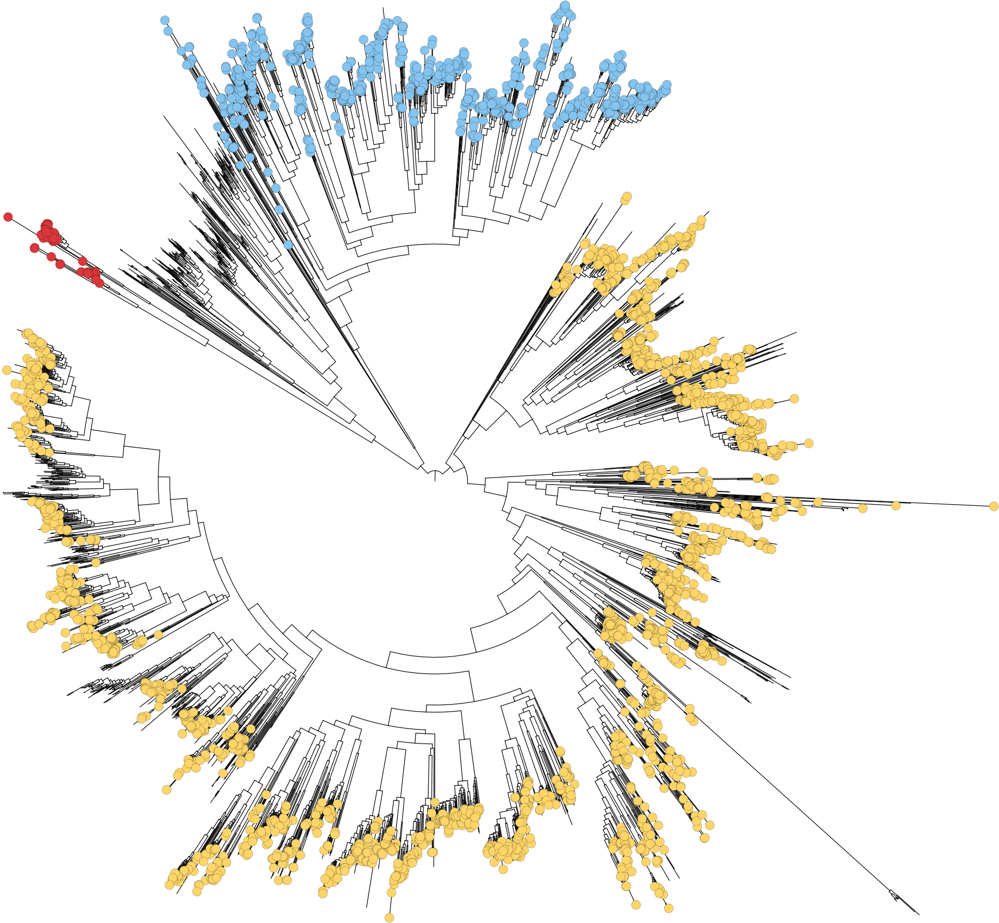

Yu Sugihara
Evolution • Computational Biology
Team Leader, The Sainsbury Laboratory, Norwich, UK
yu.sugihara@tsl.ac.uk



Evolution • Computational Biology
Team Leader, The Sainsbury Laboratory, Norwich, UK
yu.sugihara@tsl.ac.uk
